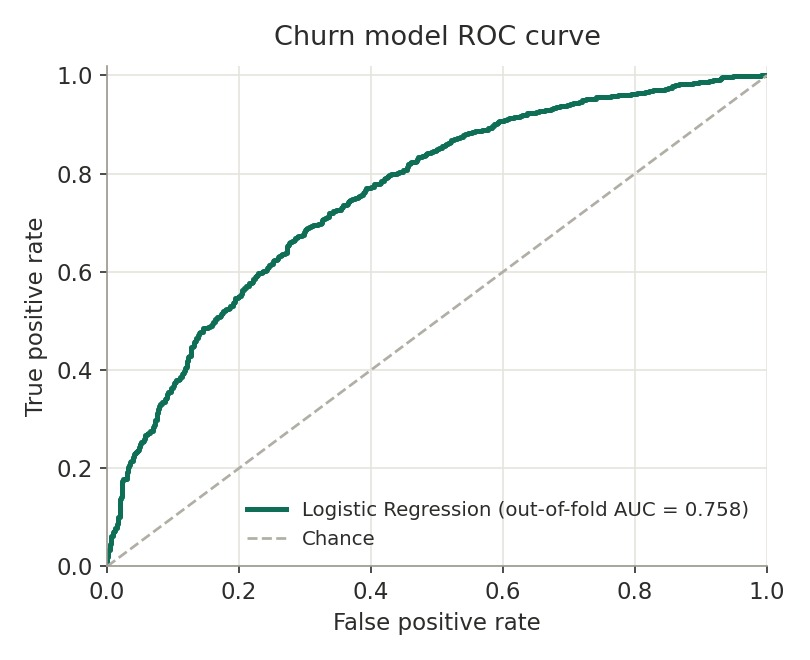
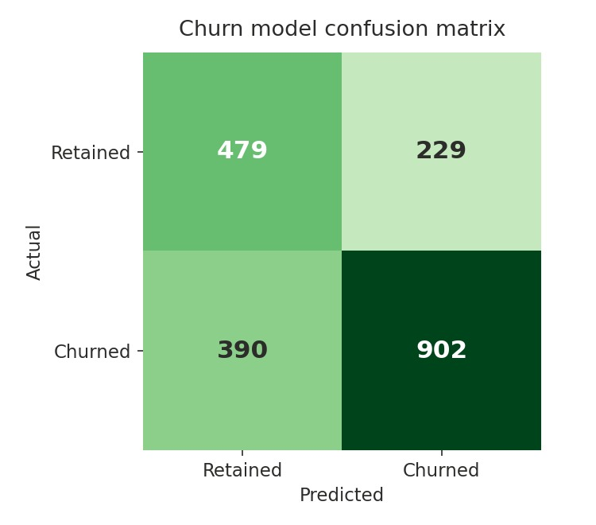
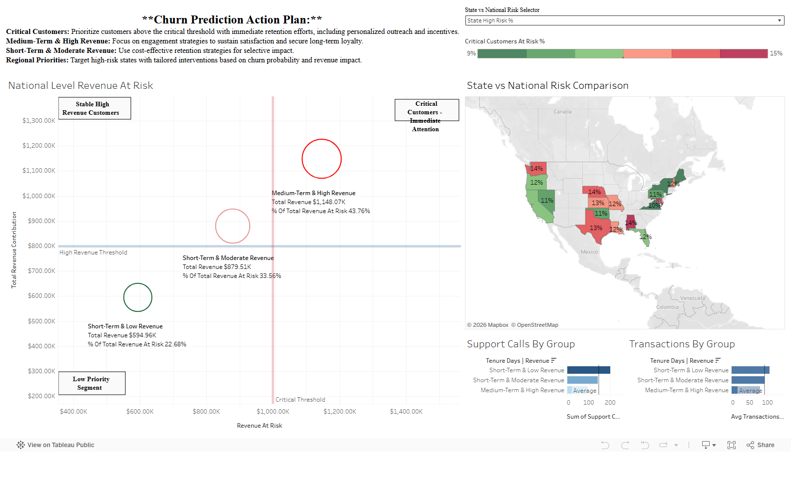

Problem
Subscription businesses lose revenue quietly when customers cancel. The goal: score every customer's churn risk from account attributes, support activity, transaction behavior, and subscription timing, so retention work can focus on the customers most likely to leave — and on the dollars attached to them.
Data
Two input tables joined on customer ID: customer attributes (segment, region, account and contract type, payment, service) and subscription records (dates, cost, support calls, transactions, billing drivers, churn label). The shipped sample is 2,000 seeded synthetic customers, generated so the whole pipeline reproduces from a fresh clone without private customer records — this is disclosed by design, and any pair of CSVs with matching columns can be substituted via command-line flags. This is a worked example of leakage-aware churn modeling, not a benchmark on a real customer base.
The leakage find
Why you can trust my numbers
The first version of this model looked perfect — and that was the problem. The dashboard showed a wall of predicted probabilities at 1.0. A single-feature audit traced it to target leakage: avg_transactions_per_day alone predicted churn with an AUC of 1.0, because it encoded information that only exists after a customer has already churned.
Scored honestly — out of fold, with leaky fields removed — the model was worth 0.505: a coin flip. So the pipeline was rebuilt: leakage-prone fields (end dates, activity flags, tenure, per-day rates, IDs) are dropped before modeling, a single-feature AUC screen runs on every export as a permanent guardrail, and every customer is scored out of fold. After the rebuild, the strongest single feature scores 0.675 — real signal, honestly measured, with the final model at 0.758.
Method
The pipeline standardizes and deduplicates both tables, derives the churn label when none is provided, engineers referral and subscription-timing features, and auto-selects numeric plus low-cardinality categorical features. Two models train in scikit-learn pipelines — Logistic Regression and Random Forest — evaluated on a stratified 30% holdout and by out-of-fold ROC-AUC. The winner is chosen by the out-of-fold number, because that is the score that survives contact with new data.
Results
| Model | Out-of-fold ROC-AUC | Holdout ROC-AUC | Accuracy |
|---|---|---|---|
| Logistic Regression (selected) | 0.758 | 0.776 | 0.707 |
| Random Forest | 0.744 | 0.789 | 0.727 |
Logistic Regression wins on the honest metric even though Random Forest looks better on the holdout — exactly the kind of call the out-of-fold discipline exists to make. On the churn class the selected model reaches 0.81 precision and 0.71 recall. Scoring all 2,000 customers yields 1,131 predicted churners, tiered High (608) / Medium (744) / Low (648), with $95,704 in monthly revenue at risk — every number above comes from the committed pipeline outputs.


Output: the dashboard
The pipeline exports a Tableau-ready dataset — churn probability, risk tier, revenue at risk, and an impacted-customer flag per customer — plus a static QA packet so the dashboard can be reviewed against known numbers before publishing. The live dashboard shows where risk concentrates, which states run hot, and how support-call patterns differ by risk group.

Scale layer
A PySpark path keeps the same Tableau serving contract at larger volume: Spark generates and trains on a 10-million-row synthetic dataset in Docker, then writes aggregated rollups (region, contract, risk tier) plus a capped row-level extract for drilldown — separating heavy processing from dashboard delivery instead of committing large generated data.
Business takeaway
Retention teams don't need a probability — they need a call list with dollars on it. This pipeline turns raw account data into exactly that: the 608 high-tier customers carry the bulk of $95,704 in monthly revenue at risk, and the dashboard drills from the national picture to the individual customers worth calling first.
Limitations
- The sample data is synthetic — built to carry genuine but imperfect churn signal, not to represent a specific company's customer base.
- Classification uses the default 0.5 threshold; a real retention program would tune it against the cost of missed churners versus wasted outreach.
- No hyperparameter search — model settings are sensible fixed choices.
- When no churn label is provided, churn is inferred from subscription end dates, which treats every ended subscription as churn.
Next improvements
- Threshold tuning against an explicit cost matrix.
- A hyperparameter search under the same out-of-fold discipline.
- Publishing the refreshed dashboard (visual polish pass is queued).